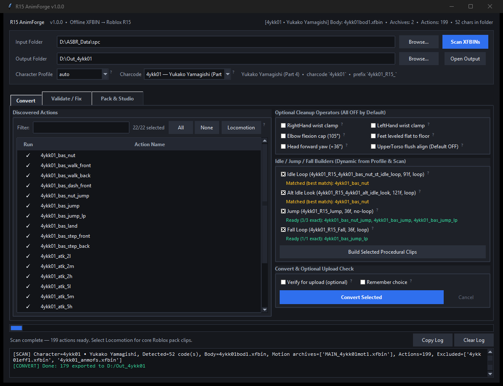
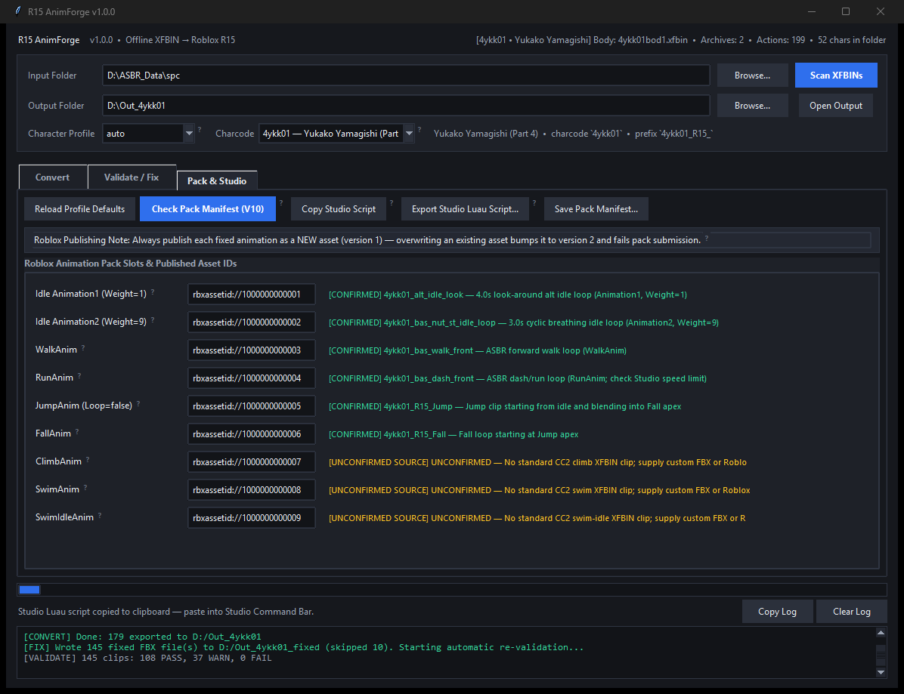

R15 AnimForge is a free, offline Windows app and command-line tool for converting JoJo ASBR / CyberConnect2 .xfbin character animations into Roblox R15 .fbx clips, building Idle/Jump/Fall loops, fixing upload errors, and preparing animations for Roblox Studio.

Contents
1. Getting Started & Requirements02
5. Checking & Fixing Upload Errors06
2. Converting Animations (Convert Tab)03
6. Roblox Studio & Animation Packs07
3. Cleanup Options & Loop Builders04
7. Roblox Validation Rules (V01–V12)08
4. How the Character Matcher Works05
8. Command Line & Common Issues09
R15 AnimForge v1.0.0 User GuidePage 1
R15 AnimForge v1.0.0Getting Started
1. Getting Started & Requirements
R15 AnimForge runs completely offline on your PC. Nothing is uploaded anywhere, and it never modifies your original .xfbin or .fbx files.
What You Need First
Required Software
Windows 10 or 11 (64-bit)
Blender 5.3+ (installed normally under Program Files\Blender Foundation, placed in a blender\ folder beside AnimForge.exe, or set via ANIMFORGE_BLENDER)
Blender-XFBIN-Importer addon (install in Blender's addons folder or point AnimForge to it using --addon-dir / ANIMFORGE_ADDON_DIR)
Game Files
Extracted CC2 / JoJo ASBR character files containing a body skeleton (*bod1.xfbin) and motion archive (*mot1.xfbin or *viewer1.xfbin).
You can point AnimForge at either a single character folder or an entire extracted spc folder with dozens of characters inside.
Both uncompressed NUCC and compressed CRILAYLA files work out of the box.
How the Whole Process Works
1
Scan your character folder: Open AnimForge.exe, select your .xfbin input folder and an empty output folder, and click Scan XFBINs. Pick the character you want from the Charcode dropdown.
2
Export FBX clips and build loops: Click Locomotion if you only want core movement clips (walk, dash, idle, jump, fall), then click Convert Selected and Build Selected Procedural Clips.
3
Validate against Roblox upload rules: Switch to Validate / Fix and click Run verification. AnimForge checks speed limits, floor clipping, and joint angles offline before you spend time importing into Studio.
4
Auto-fix problems into a new folder: Click Fix issues..., review the before/after preview list, and click Write Fixed FBX(s) & Re-validate. Fixed files go into a new *_fixed folder and are checked again automatically.
5
Convert curves in Studio and publish: Import the fixed .fbx clips in Roblox Studio's Animation Editor, run AnimForge's Studio script in the Command Bar so Roblox accepts the curves, publish each clip as a new asset (Version 1), and check your 9-slot pack in Pack & Studio.
Built-in tooltips: Any setting or checkbox in the app with a small ? next to it has a hover tooltip explaining what it does. Local app settings and Blender worker caches live inside %LOCALAPPDATA%\AnimForge so your personal Blender setup is never touched.
R15 AnimForge v1.0.0 User GuidePage 2
R15 AnimForge v1.0.0Convert Tab
2. Converting Animations (Convert Tab)
Use the top bar and the Convert tab to scan game archives, pick a character, choose which clips to export, and convert them to R15 .fbx files.
Top bar showing detected character (4ykk01, Yukako Yamagishi), discovered action list on the left, and cleanup/builder panels on the right.
Top Bar Controls
Control
Default
What it does
Input Folder
Last used
Folder containing your .xfbin files. Subfolders are scanned automatically, so pointing at a full data/spc dump works just as well as a single character folder.
Output Folder
Last used
Where converted .fbx files and logs (convert_report.json) are saved.
Character Profile?
auto
Controls bone names and builder defaults. Leave on auto for normal use; custom profiles in profiles\ load automatically when that character is scanned.
Charcode?
auto
Lists every animatable character found by code and name (e.g. 4ykk01 — Yukako Yamagishi (Part 4)). Costume skins without animations are hidden, and split pairs (6pci02 + 6pci01bod1) are matched automatically.
Selecting & Converting Actions
Control
How to use it
Filter / All / None
Type in Filter (e.g. walk or atk_) to narrow the list, or click rows to toggle their checkmark. Hiding rows does not uncheck them.
Locomotion?
Selects core movement/idle clips (bas_nut, walk, dash, run, jump, fall, idle, climb, swim) and skips combat, hit, and facial clips.
Verify for upload?
Off by default. If checked, switches to Validate / Fix and runs upload checks right after conversion finishes. Check Remember choice to save it.
Convert Selected
Runs up to 4 headless Blender workers at 30 FPS and caches hashes (.animforge_cache.json) so unchanged clips are skipped on re-runs.
R15 AnimForge v1.0.0 User GuidePage 3
R15 AnimForge v1.0.0Cleanup & Builders
3. Cleanup Checkboxes & Loop Builders
All six cleanup checkboxes on the right side of the Convert tab start OFF so batch exports preserve original fighting-game animations faithfully. Turn them on only when you want cleaner R15 posture on specific clips.
Optional Cleanup Operators
Checkbox
Limit Used
When to turn it on
RightHand wrist clamp?
±3° XZ, ±10° Y
Keeps exaggerated wrist bends from clipping into blocky R15 forearms. Helpful for idles and walks.
LeftHand wrist clamp?
±8° XZ, ±10° Y
Slightly looser clamp for the left wrist.
Elbow flexion cap (105°)?
-105°..+10° X
Stops forearms from folding through upper-arm geometry on chunky R15 avatars.
Feet leveled flat to floor?
0° pitch/roll
Flattens both feet onto the ground while keeping facing yaw. Great for grounded idles; leave OFF for jumps, kicks, and aerial clips.
Head forward yaw (+36°)?
+36° world Y
Turns angled fighting-game idle stances so the character looks forward toward the Roblox camera.
UpperTorso flush align?
0° yaw, 0.25× roll
Squares the upper torso over the waist while counter-rotating the head and arms so limbs keep their pose. Also applies to the procedural builders below.
Built-in Idle, Jump & Fall Builders
Fighting games rarely include ready-made Roblox breathing idles or linked jump/fall loops. Clicking Build Selected Procedural Clips generates up to four pack-ready .fbx clips from the scanned character:
Builder
Length / Loop
Source clips used
What it creates
Idle Loop?
91 frames (3.0s) Loop
bas_nut_st + bas_nut
Takes frame 0 as a clean standing pose (clamped wrists, leveled feet, forward head) and adds subtle symmetric breathing with an exact loop seam.
Alt Idle Look?
121 frames (4.0s) Loop
bas_nut_st + bas_nut
Secondary idle for Roblox Animation1 (Weight=1). Adds smooth left/right head turns and slight weight shift while keeping feet planted.
Jump?
36 frames (1.17s) No-loop
bas_nut_jump + bas_jump + bas_jump_lp
Blends smoothly from idle into takeoff crouch, launches upward (kept under 51 studs/s), and ends right on the opening pose of Fall Loop.
Fall Loop?
36 frames (1.17s) Loop
bas_jump_lp
Airborne hang loop anchored to the final frame of Jump so Roblox transitions from Jump to Fall without snapping.
R15 AnimForge v1.0.0 User GuidePage 4
R15 AnimForge v1.0.0Character Matching
4. How the Character & Clip Matcher Works
Different JoJo ASBR characters name their internal animations slightly differently. AnimForge scans each character's actual action list instead of failing whenever a clip name doesn't match Rohan's layout.
Automatic Name Matching Across Any ASBR Character
Stance & Prefix Learning
Case-insensitive & cross-variant prefixes: Uppercase names or cross-variant prefixes inside an archive (like 3jtr10_* inside 3jtr01) are normalized automatically.
Inserted stance tags: Mounted, Stand, and style characters insert tags like bas_r_* (horseback) or bas_s_* (Stand mode). AnimForge detects that pattern across the scanned archive and applies it to all four builders.
Smart filtering: Directional versions (front, back, left, right) and attack/hit clips (atk, dmg, hit) are penalized so neutral clips like 7val01_bas_r_jump_lp win cleanly.
Fallback Rules When Clips Are Missing
Missing bas_nut_st: Some characters (such as 4ykk01 Yukako) have bas_nut without a separate _st pose. Idle Loop and Alt Idle Look automatically fall back to bas_nut (or idle / wait / stand).
Missing bas_nut_jump: Jump automatically uses frame 0 of the matched launch clip (bas_*_jump) as the crouch takeoff pose.
Fall-only archives: If a character only has a hang/fall clip and no idle or jump launch clips, Fall Loop still enables and builds on its own.
What the Status Text Under Each Builder Means
Status Color & Prefix
Meaning
Ready (k/k exact): ...
All source clips matched the standard naming convention directly.
Matched (formula bas_r_*): ...
AnimForge learned the character's stance naming tag (e.g. bas_r_ or bas_s_) and matched the right clips automatically.
Matched (best match): ...
One expected filename didn't exist, so a compatible fallback clip was chosen (for example using 4ykk01_bas_nut for standing pose). Ready to build.
No match found for: ...
No usable clip for that role exists in the scanned archive. That builder's checkbox is disabled so clicking Build won't fail mid-run.
Full Character Names & Costume Filtering
CyberConnect2 .xfbin files only store short 6-character codes like 4ykk01 or 6pci02. AnimForge includes a built-in lookup catalog of all ASBR fighters, Stands, DLC characters, and mounts (and also checks messageInfo.bin.xfbin if present in your game dump) to display full character names in the dropdown. Alternate costume skins that only contain models without animations are hidden automatically, while characters whose body and animation live under different variant numbers (such as Pucci 6pci02 + 6pci01bod1) are paired for you.
Roblox rejects Avatar animations that move faster than 51 studs/s, dip feet more than 0.10 studs below the floor, translate bones other than LowerTorso, or lack joint motion. Check and fix your .fbx clips here before opening Studio.
Validation results sorted by speed. Filter with All / Issues Only / FAIL Only or search, and click any row to view full findings below the table.
What Each Auto-Fix Option Changes
Checkbox
Default
What it fixes
Strip non-LT translation?
ON
Zeros translation curves on every bone except LowerTorso (fixes V06).
Floor lift?
ON
Raises LowerTorso.Y so feet stay within 0.07 studs of the floor (V05) and low limbs stay above -3.02 studs (V09).
Clamps?
ON
Applies wrist/elbow clamps and caps joint angles from rest at 178° (V08).
Peak smoothing?
ON
Smooths sharp spikes along fast limbs until speed is ≤ 42.5 studs/s (V03) and spin is ≤ 1600 deg/s (V04), and closes loop seams (V11).
Time-stretch?
OFF
Slows down very fast clips (up to 4×, max 9.8s) when smoothing alone isn't enough. Off by default because it changes clip duration.
Fix Preview: Shows exact before/after metrics and skipped unfixable clips before writing any file.Auto Re-validation: Writes into a separate *_fixed folder and re-checks the exported files automatically.
R15 AnimForge v1.0.0 User GuidePage 6
R15 AnimForge v1.0.0Pack & Studio
6. Getting Clips into Roblox Studio (Pack & Studio)
When you import an .fbx in Roblox Studio's Animation Editor, Studio saves quaternion RotationCurve objects by default. Roblox's Marketplace validator rejects RotationCurve and requires EulerRotationCurve (XYZ) instead.

Pack & Studio tab: copy the Studio conversion script, check which fixed FBXs exist on disk, paste your 9 published asset IDs, and validate the pack manifest (V10).
1
Import FBXs into Studio: In Studio's Animation Editor on your R15 rig, click ... → Import → From FBX Animation for each clip from *_fixed and save them inside AnimSaves.
2
Run the Studio script: Click Copy Studio Script in AnimForge, open View → Command Bar in Studio, paste it, and press Enter. It creates clean ... [FIXED] copies using 60 FPS unwrapped EulerRotationCurve (XYZ) and the right Loop flags (Loop=false for Jump).
3
Publish each clip as Version 1: Load each ... [FIXED] animation and publish it to Roblox as a brand-new animation asset. Paste the 9 asset IDs into Pack & Studio and click Check Pack Manifest (V10).
Important Roblox rule — publish as a NEW asset (Version 1): Never overwrite an existing Roblox animation ID for an Avatar pack. Updating an existing asset bumps it to version: 2 and causes Marketplace submission to fail with Expected version: 1.
The 9 Required Pack Slots (Rule V10)
Slot
Studio Setting
Recommended Clip Source
Idle1 & Idle2
Weight=1, Weight=9, Loop
*_alt_idle_look (10%) and *_idle_loop (90%) from the procedural builders.
Walk & Run
Loop
*_bas_walk_front and *_bas_dash_front from your *_fixed folder.
Jump & Fall
Jump No-loop, Fall Loop
*_R15_Jump and *_R15_Fall procedural clips (already matched at the apex).
Climb, Swim, SwimIdle
Loop
CC2 fighters rarely include these; provide custom FBXs or separate Version-1 Roblox assets (no duplicate IDs).
R15 AnimForge v1.0.0 User GuidePage 7
R15 AnimForge v1.0.0Validation Rules
7. Roblox Validation Rules (V01–V12)
These twelve checks match Roblox Studio's UGCValidation rules and Roxie reference proportions. Items marked FAIL will block Roblox upload; items marked WARN are speed, spin, or seam safety checks.
Rule
Check
Level
Limit
Auto-fix?
What it means & how to fix it
V01
Curve classes
FAIL
6 allowed
Studio script
Only EulerRotationCurve, Vector3Curve, FloatCurve, MarkerCurve, Folder, AnimationRigData are permitted.
V02
Joint rotation present
FAIL
≥ 0.001 rad
No
At least one body joint must rotate. Facial-only (fce_*) and frozen guard holds cannot be auto-fixed.
V03
Linear speed
FAIL
51.0 studs/s
Yes
Checked at 30 & 70 FPS across all joints, pinky tips, and feet. Enable Time-stretch for fast snaps.
V04
Joint spin speed
WARN
1750 deg/s
Yes
Per-joint angular velocity warning; fixed automatically by Peak smoothing.
V05
Floor penetration
FAIL
0.10 studs
Yes
Tests all 8 corners of both feet against Roblox's floor plane; fixed by Floor lift.
V06
Non-pelvis translation
FAIL
≤ 0.30 studs
Yes
Only LowerTorso may translate; auto-fix zeros all other bone positions.
V07
Duration & spacing
FAIL
(0, 10]s, ≥1/70s
No
Must be 10 seconds or shorter with key spacing ≥ 1/70s. Trim longer cutscenes manually.
V08
Max joint angle
FAIL
≤ 180°
Yes
Keeps every joint rotation within 180° from rest pose via Clamps.
V09
Lowest height / bounds
WARN
Y ≥ -3.1, d ≤ 25
Yes
Checks low hand/limb dips relative to HumanoidRootPart; cleared by Floor lift.
V10
9-slot pack schema
FAIL
9 unique IDs
Pack tab
Verifies exact Studio folder/StringValue names (2 weighted idles, 1 clip per other slot, no duplicate IDs).
V11
Loop seam match
WARN
0.015 rad
Yes
Checks start-to-end continuity on looping clips (one-shot transitions like bas_nut_turn excluded).
V12
Data sanity
FAIL
Finite / unit
No
Rejects NaN/Inf values, corrupted tracks, or clips with fewer than 2 keyframes.
30 FPS consistency: Both FBX export and post-fix re-validation sample clips through Blender at 30 FPS so the numbers shown in AnimForge match what Roblox Studio imports.
R15 AnimForge v1.0.0 User GuidePage 8
R15 AnimForge v1.0.0CLI & Troubleshooting
8. Command Line, Custom Profiles & Common Issues
Every feature in the window also works from PowerShell or batch scripts through AnimForge.exe. Double-clicking with no arguments opens the GUI; passing a subcommand runs in the terminal.
Command-Line Reference
# Check bundled profiles, math, validation, and builders
.\AnimForge.exe selftest --json
# Scan a folder (auto-detects character, or specify --charcode)
.\AnimForge.exe scan "D:\ASBR_Data\spc" --charcode 4ykk01 --json
# Convert clips + generate Idle/Jump/Fall loops (add --verify-for-upload to auto-check)
.\AnimForge.exe convert "D:\ASBR_Data\spc" "D:\Out_4ykk01" --charcode 4ykk01 --build-procedural
# Validate existing FBXs and write validation_report.json + validation_report.html
.\AnimForge.exe validate "D:\Out_4ykk01"
# Fix failing clips into a separate *_fixed folder and re-validate on disk
.\AnimForge.exe fix "D:\Out_4ykk01" --apply strip_translation floor_lift clamps smoothing time_stretch
# Validate a 9-slot pack manifest and export the Roblox Studio Luau script
.\AnimForge.exe build-pack "D:\Out_4ykk01\pack_manifest.json" --write-template --studio-script-out "D:\Out_4ykk01\studio_fix.lua"
Custom Character Profiles (profiles\<charcode>.json)
profiles\auto.json handles almost any ASBR or CC2 character automatically. If you want a custom filename prefix or bone alias for a specific fighter, copy profiles\auto.json to profiles\<charcode>.json (for example, 4rhn01.json sets Rohan_R15_). Leaving the app on auto picks it up whenever that charcode is scanned.
Troubleshooting Common Problems
What you see
What causes it & how to solve it
Studio says RotationCurve unauthorized or no joint manipulation
Studio imported the FBX with quaternion curves. Click Pack & Studio → Copy Studio Script, run it in Studio's Command Bar, and publish the generated ... [FIXED] copy instead.
Upload error: version: 2. Expected version: 1.
You overwrote an existing Roblox animation asset. Publish that clip again as a brand-new Animation asset so it is Version 1, then update its ID in the pack.
Fixer skipped some clips
Check the Fix Preview dialog or bottom log. Facial/static clips (V02) cannot be uploaded as body animations; fast swings over 51 studs/s usually fix cleanly with Time-stretch enabled.
DLC character or C-MOON / Pucci Final not listed
Make sure extracted patch*.cpk / DLC files are inside your input folder. Split variant files (like 6pci02 + 6pci01bod1) pair automatically when both exist.
Blender or XFBIN addon not found
Install Blender 5.3+ and Blender-XFBIN-Importer in Blender's addons folder, or pass --blender / --addon-dir (or set ANIMFORGE_BLENDER / ANIMFORGE_ADDON_DIR).